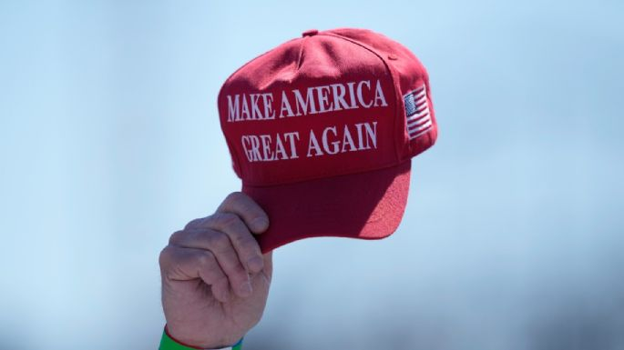

Equipo de campaña de Trump anuncia que empezará a aceptar donaciones en criptomonedas
La campaña del magnate está aceptando una amplia gama de monedas digitales, como Bitcoin, Ether y US Dollar Coin, y también se incluye monedas de bajo valor que tienden a ser populares entre figuras de internet como Shiba Inu Coin, y Dogecoin.
WASHINGTON (AP) — El equipo de campaña de Donald Trump anunció el martes que empezará a aceptar donaciones en criptomonedas como parte de un esfuerzo por construir lo que calificó como un "criptoejército" de cara a las elecciones presidenciales.
La campaña de Trump lanzó una página de recaudación de fondos que le permite a "cualquier donante autorizado contribuir" a sus comités políticos utilizando cualquier criptomoneda aceptada en la plataforma bursátil Coinbase.
El anuncio promueve el mensaje de Trump como un candidato que apoya las criptomonedas, y también apela a un grupo de hombres jóvenes que son cada vez más propensos a incursionar en los activos digitales.
Además, se produjo mientras el equipo de abogados de Trump finalizó con su último testigo en el caso en Nueva York que gira en torno a supuestos pagos para evitar la publicación de información perjudicial.
Las criptomonedas son activos digitales que se pueden comercializar en línea sin depender del sistema bancario global. La campaña de Trump está aceptando una amplia gama de monedas digitales, como Bitcoin, Ether y US Dollar Coin, y también se incluye monedas de bajo valor que tienden a ser populares entre figuras de internet como Shiba Inu Coin, y Dogecoin.
El multimillonario Elon Musk es considerado un entusiasta de éstas dos últimas, las cuales cotizan en los mercados de valores como DOGE y SHIB. No está claro si el equipo de campaña de Trump conservará las criptomonedas o las venderá de inmediato, ni qué tipo de comisiones pagaría en la liquidación. Si bien el equipo de campaña señaló que planea respetar las leyes electorales de Estados Unidos, la naturaleza anónima de las criptomonedas podría hacer difícil de confirmar que los fondos provienen de quien dicen ser.
Trump ya ha recibido millones en criptomonedas a través de sus proyectos de tokens no fungibles Trump Digital Trading Cards y su moneda MAGA, que salió a la venta en agosto del año pasado.